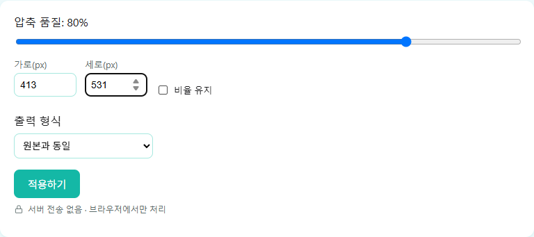

IMAGE TOOLBOX / GUIDE
여권사진·증명사진 규격에 맞게 리사이즈하는 법
여권, 주민등록증, 운전면허증 사진은 모두 같은 규격을 씁니다.
정확한 규격
인화 사진 크기 — 여권·주민등록증·운전면허증 사진은 모두 가로 35mm × 세로 45mm로 동일합니다.
얼굴(정수리~턱) 길이 — 3.2cm~3.6cm 사이여야 합니다.
온라인 여권 신청용 디지털 사진 — 가로 413 × 세로 531 픽셀이 권장 규격입니다.
해상도 — 300DPI 이상을 권장합니다.
배경은 흰색이어야 하고, 안경 착용은 원칙적으로 금지됩니다(반사·그림자 없이 눈이 선명하게 보여야 함). 정확한 최신 기준은 여권을 발급받는 기관(외교부 여권과 등)의 공지를 함께 확인하는 것이 안전합니다.
촬영 시기 기준도 헷갈리기 쉬운 부분입니다. '6개월 이내 촬영'은 여행을 떠나는 날짜나 사진을 인화한 날짜가 아니라, 여권을 발급 신청하는 시점을 기준으로 합니다. 또한 포토샵 등으로 인위적으로 보정한 사진은 사용할 수 없고, 인물과 배경 모두에 그림자나 빛 반사가 없어야 합니다. 크기와 화질을 아무리 완벽하게 맞춰도 이런 촬영 조건을 어기면 반려될 수 있습니다.
브라우저에서 규격에 맞게 리사이즈하는 법
이미지 압축 도구의 가로/세로 픽셀 입력란에 원하는 규격(예: 413 × 531)을 직접 입력하면 해당 크기로 맞춰집니다. '비율 유지'를 꺼야 정확한 가로세로 값을 각각 지정할 수 있습니다. 원본 사진에서 얼굴 비율이 규격과 크게 다르다면, 먼저 사진 편집 프로그램으로 필요한 부분만 잘라낸 뒤 이 도구로 정확한 픽셀 크기로 맞추는 순서를 권장합니다.

자주 묻는 질문
일반 사진을 여권사진 규격으로 바꾸면 바로 쓸 수 있나요?
크기만 규격에 맞춘다고 되는 것은 아닙니다. 배경색, 얼굴 비율, 표정, 조명 같은 촬영 조건도 함께 충족해야 합니다. 크기 조정은 이 도구로 할 수 있지만, 촬영 조건 자체는 다시 찍어야 할 수도 있습니다.
주민등록증과 운전면허증도 여권사진과 같은 사진을 써도 되나요?
인화 크기 규격(35×45mm)이 동일하기 때문에 대체로 같은 사진을 사용할 수 있습니다. 다만 발급 기관마다 세부 요건이 다를 수 있으니 제출 전에 해당 기관의 최신 안내를 확인하는 것이 좋습니다.
413×531 픽셀보다 큰 사진을 올리면 어떻게 되나요?
이 도구에서 가로/세로 값을 직접 입력하면 원본이 그보다 크더라도 지정한 크기로 줄여줍니다. 반대로 원본이 지정한 크기보다 작으면 화질이 손상될 수 있으므로, 가능한 한 고해상도 원본에서 시작하는 것이 좋습니다.
배경색이 흰색이 아니면 안 되나요?
네. 여권사진은 균일한 흰색 배경을 요구합니다. 그림자나 무늬가 있는 배경, 다른 색 배경은 반려 사유가 될 수 있어 흰 벽이나 흰 배경천 앞에서 촬영하는 것이 안전합니다.
여권 사진에 유효기간이 있나요?
정해진 유효기간이 있다기보다 '6개월 이내 촬영'이라는 기준이 있습니다. 이 6개월은 여권을 발급 신청하는 시점을 기준으로 계산되며, 그보다 오래된 사진은 다시 촬영해야 합니다.
스튜디오에서 찍은 사진과 셀카는 차이가 있나요?
규격과 조건(흰 배경, 정면, 무표정 등)만 충족하면 촬영 장소나 기기 자체는 문제되지 않습니다. 다만 셀카는 조명과 배경을 규격에 맞추기가 상대적으로 어려워서, 스튜디오나 사진관에서 촬영하는 경우가 더 안전한 편입니다.